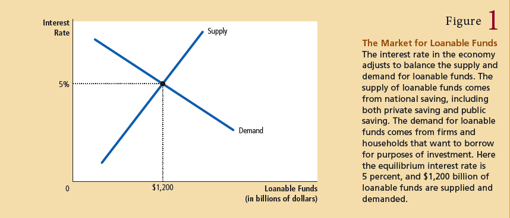
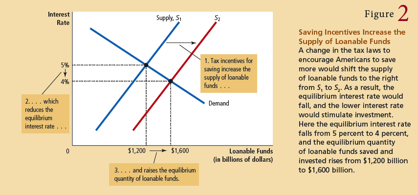
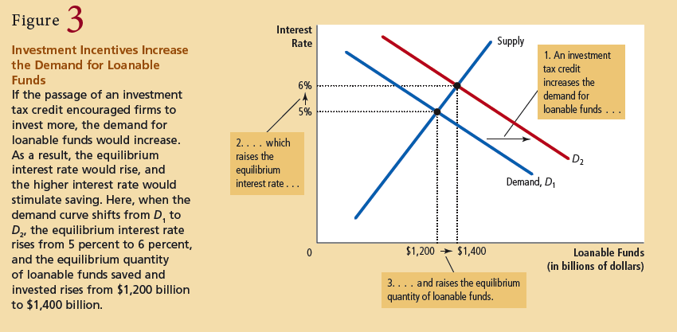
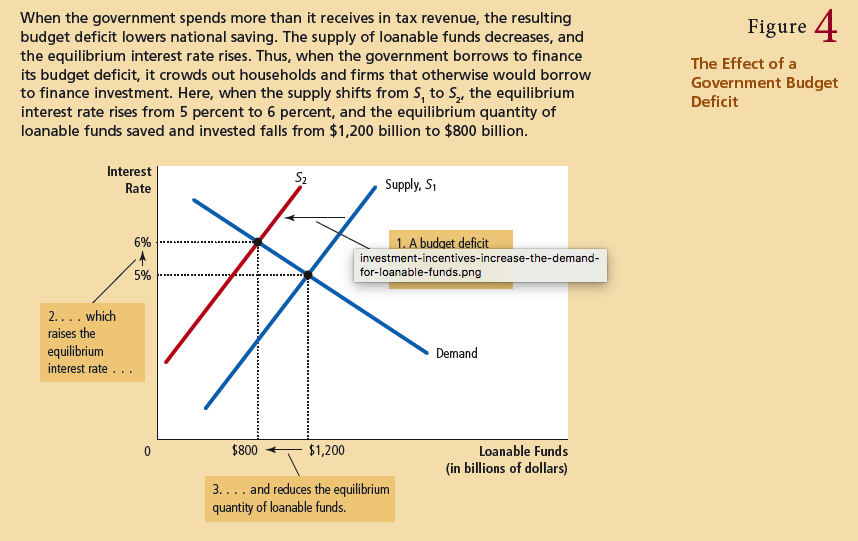

Chapter 25 & 26
productivity is the quantity of goods and services produced from each unit of labor input.
factors of production are the inputs used to produce goods and services - labor, capital, and so on
The four determinants of a countrys productivity:
- physical capital is the stock of equipment and structures that are used to produce goods and services.
- human capital is the knowledge and skills that workers acquire through education, training, and experience
- natural resources are the inputs into the production of goods and services that are provided by nature, such as by land, rivers, and mineral deposits. The come in two forms: renewable and nonrenewable
- technological knowledge is society's understanding of the best ways to produce goods and services. It refers to society's understanding of how the world works whereas human capital refers to the resources expended transmitting this understanding.
diminishing returns is the property whereby the benefit from an extra unit of an input declines as the quantity of the input increases.
When workers already have a large quantity of capital to use in producing goods and services, giving them an additional unit of capital increases their productivity only slightly.
 In the long run, the higher saving rate leads to a higher level of productivity and income but not to higher growth in these variables.
In the long run, the higher saving rate leads to a higher level of productivity and income but not to higher growth in these variables. - ie productivity and income is increased from savings, but the growth rate eventually returns to its normal
rate.
The
catch up effect is the proerty whereby countries that start off poor tend to grow more rapidly than countries that start off rich.
A capital investment that is owned and operated by a foreign entity is called a
foreign direct investment.
An investment that is financed with foreign money but operated by domestic residents is called
foreign portfolio investments.
The financial system is the group of institutions that help to match one person's saving with anoorher person's investment.
Financial Markets are institutions through which savers can directly provide funds to borrowers. The two most important markets in our economy are the fond market and the stock market.
Financial Intermediaries are financial institutions which savers can indirectly provide funds to borrowers.
A
bond is a cerificate of indebtedness with the following characteristics:.
- date of maturity: time at chich the load will be repaid
- interest rate: the amount paid periodically until the load matures
- principal: amount borrowed
- term: length of time until a bond matures
- credit risk: the probaility that the broower will fail to pay some of the interest or principal.
- default: failure to pay some of the interest or principal
Bond owners are not required to pay taxes on municipal bonds.
Stock is a partial ownership in a firm.
The sale of stock to raise money is called
equity finance, whereas the sale of bonds is called
debt finance.
The primary function of a
bank is to take in deposits from people who want to save and use the deposits for people who want to borrow
A
mutual fund is an institution that sells shares to the public and uses the proceeds to buy a portfolio of stocks and bonds.
National Saving is the total income inthe economy that remains after paying for consumption and government purchases.
private saving is the income that households have left after paying for taxes and consumption.
public saving is the tax revenue that the government has left after paying for its spending.
buget surplus is an excess of tax revenue over government spending
budget deficit is a shortfall of tax revenue from government spending.
The market for loanable funds is the market in which thos ewho want to save supply funds and those who want to invest demand funds.

nominal interest rate is the interest rate that is usually reported.
real interest rate is the interest rate that is corrected for inflation

Saving Incentives

Investment Incentives

Government Budget Deficit
When the government reduces national saving by running a budget deficit, the interest rate rises, and investment falls.
crowding out is a decrease in investment that results from government borrowing.
a budget surplus increases the supplyh of loanable funds, reduces the interest rate, and stimulates investment.